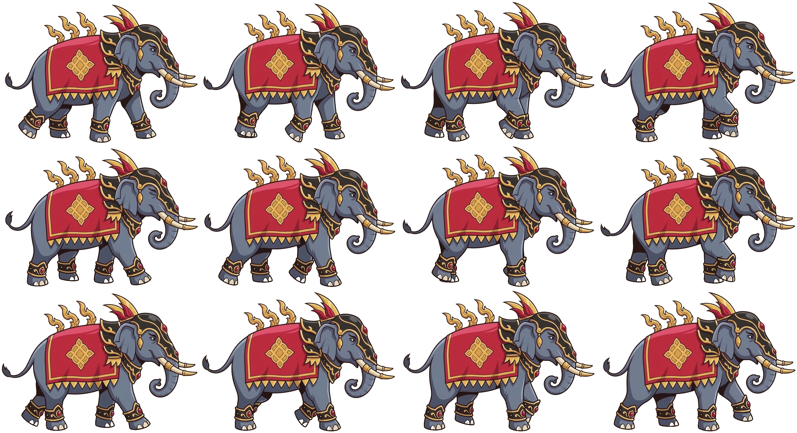

จากวิดีโอ Google Flow · 12 เฟรม
ช้างเดิน · sprite sheet
ดึง 12 เฟรมจากวินาทีที่ 2–5 ของวิดีโอ (ช่วงที่วนกลับมาท่าเดิมได้เนียนที่สุด) ลบพื้นหลังเป็นโปร่งใสแล้ว
▶ {{ fps }} fps · เฟรม {{ frameNo }}/12
ไฟล์
assets/elephant-walk-sheet.png
ขนาดรวม
2796×1521 px
ต่อเฟรม
699×507 px · 4 คอลัมน์ × 3 แถว
ความเร็ว
12 fps (เดินตามจังหวะในวิดีโอ)
